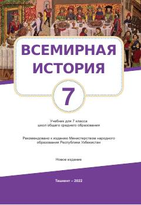

UT7-sinf uchun O'rta asrlar jahon tarixi bo'yicha o'quv qo'llanma.
Ushbu darslik 7-sinf o'quvchilari uchun mo'ljallangan bo'lib, V-XIII asrlardagi jahon tarixi, xususan, O'rta asrlar davri voqealari va sivilizatsiyalarini qamrab oladi. Kitobda Yevropa va Osiyo xalqlarining ijtimoiy-iqtisodiy rivojlanishi, feodalizm munosabatlari hamda tarixiy manbalar haqida batafsil ma'lumotlar keltirilgan.